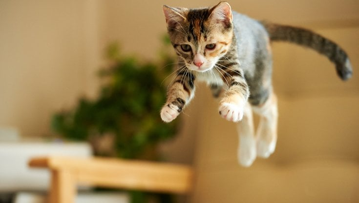
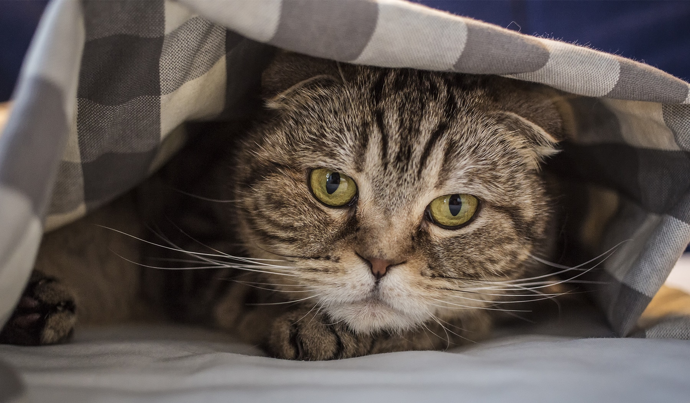
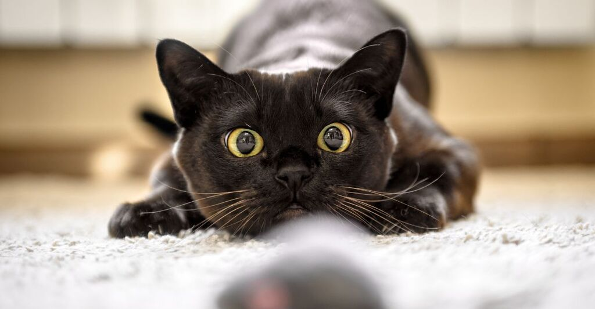

Perchè il gioco è così importante per i gatti?
Il gioco è una parte fondamentale della vita dei gatti, non solo per il divertimento ma anche per la loro salute fisica e mentale. Attraverso il gioco, i gatti possono esercitare i loro istinti naturali, mantenersi in forma e prevenire problemi comportamentali. In questo articolo, esploreremo i diversi motivi per cui il gioco è così importante per i nostri amici felini.
Benefici Fisici del Gioco
Promuove l'Attività Fisica
Il gioco aiuta a mantenere i gatti attivi e in forma. Attraverso l'inseguimento di giocattoli e movimenti rapidi, i gatti esercitano i loro muscoli e articolazioni. Questo è particolarmente importante per prevenire l'obesità, che può portare a una serie di problemi di salute come diabete e malattie cardiache.
Sviluppa le Capacità Motorie
Il gioco stimola le capacità motorie dei gatti, migliorando la loro agilità, coordinazione e equilibrio. Attività come saltare, arrampicarsi e afferrare giocattoli aiutano i gatti a mantenere i loro riflessi pronti e il corpo in perfetta forma.
Benefici Mentali del Gioco
Stimola la Mente
Il gioco è anche essenziale per la stimolazione mentale dei gatti. I giochi di intelligenza e i puzzle alimentari mantengono il cervello del gatto attivo e impegnato. Questo può prevenire la noia e ridurre il rischio di comportamenti distruttivi causati dall'inattività mentale.
Riduce lo Stress
Il gioco aiuta a ridurre lo stress nei gatti. Attraverso il gioco, i gatti possono scaricare l'energia in eccesso e sfogare le loro frustrazioni. Questo è particolarmente utile in ambienti domestici dove i gatti possono sentirsi limitati o annoiati.
Benefici Sociali del Gioco
Rafforza il Legame con i Proprietari
Giocare insieme aiuta a rafforzare il legame tra i gatti e i loro proprietari. Attraverso il gioco, i gatti imparano a fidarsi e a relazionarsi meglio con gli esseri umani. Questo può migliorare la qualità della vita del gatto e rendere l'interazione quotidiana più piacevole per entrambi.
Favorisce l'Interazione con Altri Gatti
In una casa con più gatti, il gioco favorisce l'interazione e aiuta a prevenire conflitti. Giocattoli condivisi e giochi interattivi possono aiutare i gatti a socializzare e a costruire relazioni positive tra loro.
Tipi di Giochi per Gatti
Giochi Interattivi
I giochi interattivi come le bacchette con piume, i laser e i giocattoli a molla sono ottimi per stimolare l'istinto di caccia del gatto. Questi giochi incoraggiano il movimento e la concentrazione, mantenendo il gatto attivo e impegnato.
Giochi di Intelligenza
I puzzle alimentari e i giochi di intelligenza sono perfetti per stimolare la mente del gatto. Questi giochi richiedono che il gatto usi il suo ingegno per ottenere una ricompensa, il che aiuta a mantenere il cervello attivo e sano.
Giochi di Arrampicata
I tiragraffi e le torri per gatti offrono opportunità di arrampicata e gioco. Questi accessori sono ideali per mantenere i gatti fisicamente attivi e fornire un'area dove possono graffiare, arrampicarsi e osservare l'ambiente circostante.
In conclusione, il gioco è una componente essenziale per il benessere dei gatti. Non solo li mantiene fisicamente attivi, ma stimola anche la loro mente, riduce lo stress e favorisce relazioni sociali positive. Assicuratevi di dedicare tempo ogni giorno al gioco con il vostro gatto per garantire una vita sana e felice.